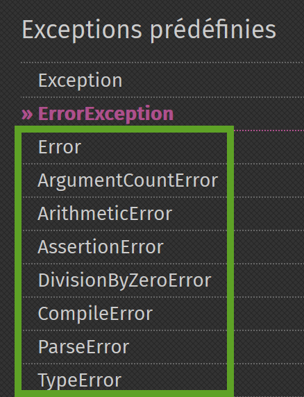
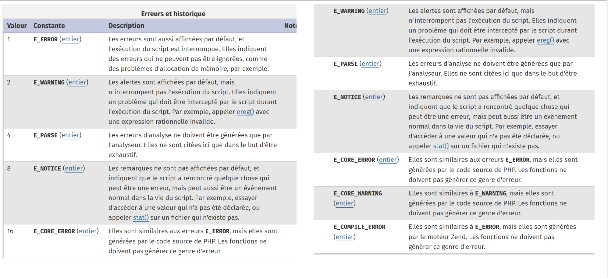
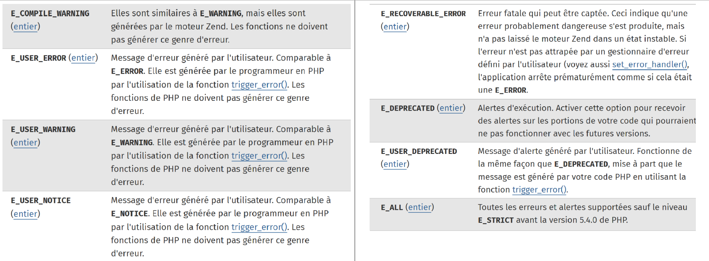

7. Ausnahmen und Fehler
Wenn eine Methode einer Klasse auf einen nicht behebbaren Fehler stößt (Datei nicht vorhanden, keine Verbindung zur Datenbank, Netzwerkverbindung unterbrochen), gibt sie keinen Fehler auf einer Konsole (Datei, Datenbank) aus, sondern löst eine Ausnahme aus. Alle Ausnahmen erben von der Klasse [\Exception]. Neben Ausnahmen generiert die interne Funktionsweise von PHP auch Fehler, deren Basisklasse die Klasse [\Error] ist. Beide Klassen implementieren die Schnittstelle PHP [\Throwable].
7.1. Die Skript-Struktur

7.2. Die Schnittstelle [\Throwable]
Die Schnittstelle [\Throwable] lautet wie folgt:

Die Methoden der Schnittstelle haben folgende Funktionen:

7.3. Die in PHP 7 vordefinierten Ausnahmen
PHP 7 definiert mehrere Ausnahmeklassen:

- in [1] die in PHP vordefinierten Ausnahmen;
- in [2] die Ausnahmen aus der Bibliothek SPL (Standard-Bibliothek PHP) von PHP 7. Die Bibliothek SPL ist eine Sammlung von Klassen und Schnittstellen, die dazu dienen, häufig auftretende Probleme von Entwicklern zu lösen.
7.4. Die in PHP 7
PHP 7 definiert mehrere Fehlerklassen:

Die Klasse [\Error] ist die übergeordnete Klasse aller in PHP vordefinierten Fehler. Die Klasse [ErrorException] ermöglicht es, eine Instanz der Klasse [\Error] in eine Instanz der Klasse [\Exception] einzubetten. Dadurch lässt sich die Fehlerbehandlung vereinheitlichen, indem ausschließlich Ausnahmen verarbeitet werden.
7.5. Beispiel 1
Das erste Beispiel [exceptions-01.php] zeigt sowohl Fehler vom Typ PHP als auch eine Ausnahme:
<?php
// Anzeige aller Fehler
ini_set("error_reporting", E_ALL);
ini_set("display_errors", "on");
// Code --------
$var=[];
// unbekannter Schlüssel
print $var["abcd"];
// Division durch Null
$var=7/0;
var_dump($var);
// Array mit festen Grenzen
$array = new \SplFixedArray(5);
$array[1] = 2;
$array[4] = "foo";
// Index außerhalb der Grenzen
$array[5]=8;
Kommentare
- Zeile 4: PHP wird angewiesen, alle Fehler zu melden. Der zweite Parameter ist die gewünschte Fehlerstufe:


- Zeile 5: Es wird angefordert, die Fehler auf der Konsole anzuzeigen;
- Zeile 9: Es wird auf ein nicht vorhandenes Element des Arrays [$var] zugegriffen;
- Zeile 11: Es wird eine Division durch Null durchgeführt;
- Zeile 14: Es wird eine Instanz der Klasse [SplFixedArray] erstellt. Diese Klasse ermöglicht die Erstellung eines Arrays mit festen Grenzen und ganzzahligen Indizes;
- Zeile 18: Es wird auf ein nicht vorhandenes Element des Arrays zugegriffen;
Ergebnisse
Kommentare
- Zeile 1 der Ergebnisse: Der Zugriff auf einen nicht vorhandenen Schlüssel eines Arrays führt zu einem Fehler PHP der Stufe [E_NOTICE]. Dies unterbricht die Ausführung des Skripts nicht;
- Zeile 3 der Ergebnisse: Die Division einer Zahl durch Null löst einen Fehler vom Typ PHP auf der Ebene [E_WARNING] aus. Dies unterbricht die Ausführung des Skripts nicht;
- Zeilen 6–9 der Ergebnisse: Der Zugriff auf einen nicht vorhandenen Index eines Arrays [SplFixedArray] löst eine Ausnahme vom Typ [RuntimeException] aus und unterbricht die Ausführung des Skripts;
7.6. Ausnahmen behandeln
Das Skript [exceptions-02.php] zeigt, wie Ausnahmen behandelt werden:
<?php
// Alle Fehler werden angezeigt
ini_set("error_reporting", E_ALL);
ini_set("display_errors", "on");
// Der Code wird mit try/catch umschlossen
try {
$var = [];
// Unbekannter Schlüssel
print $var["abcd"];
// Division durch Null
$var = 7 / 0;
var_dump($var);
// Array mit festen Grenzen
$array = new \SplFixedArray(5);
$array[1] = 2;
$array[4] = "foo";
// Index außerhalb des Bereichs
$array[5] = 8;
// Überprüfung
print "ce message ne sera pas affiché\n";
} catch (\Throwable $ex) {
// \Throwable ist die Schnittstelle, die von den meisten Fehlern und Ausnahmen implementiert wird
// Die Ausnahme wird angezeigt
print "erreur, message : " . $ex->getMessage() . ", type : " . get_class($ex) . "\n";
}
Anmerkungen
- Es handelt sich um dasselbe Skript, das im vorigen Absatz vorgestellt wurde. Nur dass nun der Code in den Zeilen 8–19, der Fehler verursachen könnte, durch eine try/catch-Struktur umschlossen wurde: Wenn der Code in den Zeilen 8–21 eine Ausnahme oder einen Fehler auslöst, wird dieser durch die catch-Klausel in den Zeilen 22–26 abgefangen;
- Zeile 22: Der Parameter der Anweisung [catch] ist der Typ der Ausnahme oder des Fehlers, der abgefangen werden soll. Indem man als Typ „[\Throwable]“ angibt, bei dem es sich um eine Schnittstelle handelt, gibt man an, dass man jede Instanz einer Klasse behandeln möchte, die die Schnittstelle „[\Throwable]“ implementiert. Da alle Fehler- und Ausnahmeklassen diese Schnittstelle implementieren, behandelt die Klausel [catch] hier jeden in einer Klasse gekapselten Fehler bzw. jede Ausnahme;
- Zeile 19: Die Anweisung, die den Fehler auslöst und die Ausnahme erzeugt. Sobald eine Ausnahme auftritt, erfolgt eine Verzweigung zur Klausel [catch]. Der Code hinter Zeile 19 wird daher nicht ausgeführt;
Ergebnisse
Kommentare zu den Ergebnissen
- Zeilen 1 und 3: Hier finden sich die Fehler der Ebene [E_NOTICE] und [E_WARNING]. Diese Fehler sind keine Ausnahmen und werden daher nicht von der Klausel [catch] behandelt;
- Zeile 5: Hier wird die in der Klausel [catch] definierte Fehlermeldung ausgegeben. Es ist also entweder eine von [\Exception] abgeleitete Ausnahme oder ein von [\Error] abgeleiteter Fehler aufgetreten. Wir sehen hier, dass es sich um die Klasse [\RuntimeException] handelt;
7.7. Parameter der Klausel [catch]
Betrachten wir das folgende Skript [exceptions-03.php]:
<?php
// Alle Fehler werden angezeigt
ini_set("error_reporting", E_ALL);
ini_set("display_errors", "on");
// ein Array mit festen Grenzen
$array = new \SplFixedArray(5);
try {
// Index außerhalb des Bereichs
$array[5] = 8;
} catch (\Throwable $ex) {
// Anzeige einer Fehlermeldung
print "Erreur 1 : " . $ex->getMessage() . "\n";
}
try {
// Index außerhalb des Bereichs
$array[5] = 8;
} catch (\Exception $ex) {
// Anzeige einer Fehlermeldung
print "Erreur 2 : " . $ex->getMessage() . "\n";
}
try {
// Wert außerhalb des zulässigen Bereichs
$array[5] = 8;
} catch (\RuntimeException $ex) {
// Anzeige einer Fehlermeldung
print "Erreur 3 : " . $ex->getMessage() . "\n";
}
try {
// Division durch 0
intdiv(5, 0);
} catch (\Throwable $ex) {
// Anzeige einer Fehlermeldung
print "Erreur 4 : " . $ex->getMessage() . "\n";
}
try {
// Division durch 0
intdiv(5, 0);
} catch (\DivisionByzeroError $ex) {
// Anzeige einer Fehlermeldung
print "Erreur 5 : " . $ex->getMessage() . "\n";
}
try {
// Division durch 0
intdiv(5, 0);
} catch (\Error $ex) {
// Anzeige einer Fehlermeldung
print "Erreur 6 : " . $ex->getMessage() . "\n";
}
try {
// Division durch 0
intdiv(5, 0);
} catch (\Exception $ex) {
// Anzeige einer Fehlermeldung
print "Erreur 6 : " . $ex->getMessage() . "\n";
}
Kommentare
- Zeilen 8–31: Drei verschiedene Möglichkeiten, die Ausnahme zu behandeln, die durch die Verwendung eines falschen Indexes mit der Klasse [\SplFixedArray] ausgelöst wird. Wir haben gesehen, dass dieser Fehler eine Ausnahme vom Typ [RuntimeException] auslöst;
- Zeile 12: Behandelt einen Fehler vom Typ [\Throwable]. Dies ist zulässig, da der Typ [RuntimeException] vom Typ [\Exception] abgeleitet ist, der die Schnittstelle [\Throwable] implementiert;
- Zeile 20: Behandelt einen Fehler vom Typ [\Exception]. Dies ist gültig, da der Typ [RuntimeException] vom Typ [\Exception] abgeleitet ist;
- Zeile 28: Behandelt einen Fehler vom Typ [\RuntimeException]. Dies ist die bevorzugte Vorgehensweise, da es sich um den exakten Typ der ausgelösten Ausnahme handelt;
- Zeilen 32–62: 4 verschiedene Möglichkeiten, die von der Funktion [intdiv] ausgelöste Ausnahme zu behandeln, wenn dieser ein Divisor gleich 0 übergeben wird. Die Funktion [ intdiv ( int $dividend , int $divisor ) : int] führt die ganzzahlige Division $dividend / $divisor durch. Ist der Divisor gleich Null, wird die Ausnahme [\DivisionByzeroError] ausgelöst;
- Zeile 35: Jeder Fehler, der die Schnittstelle [\Throwable] implementiert, wird abgefangen. Dies ist zulässig;
- Zeile 43: Der genaue Fehlertyp wird abgefangen: Dies ist die bevorzugte Vorgehensweise;
- Zeile 51: Der Typ [\Error] wird abgefangen. Dies ist gültig, da die Klasse [DivisionByzeroError] die Klasse [Error] erweitert;
- Zeile 59: Der Typ [\Exception] wird abgefangen. Dies ist ungültig, da die Klasse [DivisionByzeroError] keine Verbindung zur Klasse [\Exception] hat;
Ergebnisse
7.8. Klausel [finally]
Die try/catch-Struktur kann ein drittes Element enthalten und so zu einer try/catch/finally-Struktur werden. Der Code der Klausel [finally] wird in den folgenden beiden Fällen ausgeführt:
- Die Klausel [try] löst keine Ausnahme aus. Sie wird dann vollständig ausgeführt, anschließend springt die Ausführung des Codes zur Klausel [finally], die ebenfalls vollständig ausgeführt wird;
- Die Klausel [try] löst eine Ausnahme aus. Sie wird dann bis zu der Anweisung ausgeführt, die die Ausnahme auslöst. Die Codeausführung springt dann zur Klausel [catch], die vollständig ausgeführt wird. Anschließend springt die Codeausführung zur Klausel [finally], die vollständig ausgeführt wird;
Schließlich wird der Code der Klausel [finally] ebenfalls ausgeführt. Dieses Szenario ist im folgenden Fall nützlich:
- In der Klausel [try] hat der Code Ressourcen (Dateien, Datenbanken, Netzwerkverbindungen, Warteschlangen) angefordert. In der Regel sind diese Ressourcen speicherintensiv. Sie müssen daher so bald wie möglich freigegeben (meistens als „schließen“ bezeichnet) werden;
- Wenn die Ressourcen im Skript [try] angefordert wurden, erfolgt ihre Freigabe im Skript [finally]. Dadurch wird sichergestellt, dass die angeforderten Ressourcen in jedem Fall (unabhängig davon, ob ein Fehler auftritt oder nicht) an das System zurückgegeben werden;
Das folgende Skript [exemples/exceptions/exceptions-04.php] veranschaulicht die Funktionsweise der Klausel [finally] in verschiedenen Situationen:
<?php
// oder erstellt eine Ausnahmeneinstanz
$e = new \Exception("Erreur…");
var_dump($e);
// erster Test
try {
print "Premier test\n";
throw $e;
} catch (\Exception $ex1) {
print $ex1->getMessage() . "\n";
} finally {
print "Terminé\n";
}
// zweiter Test
try {
print "Second test\n";
} catch (\Exception $ex1) {
print $ex1->getMessage() . "\n";
} finally {
print "Terminé\n";
}
// dritter Test
try {
print "Troisième test\n";
return;
} catch (\Exception $ex1) {
print $ex1->getMessage() . "\n";
} finally {
print "Terminé\n";
}
Kommentare zum Code
- Zeile 4: $e ist eine Instanz der vordefinierten Klasse [\Exception]. Wir werden sie an verschiedenen Stellen aufrufen;
- Zeilen 8–15: Die Ausnahme $e wird in [try] (Zeile 10) ausgelöst;
- Zeile 11: Die Ausnahme [\Exception] wird abgefangen und ihre Fehlermeldung in die Konsole geschrieben;
- Zeilen 13–15: Die Anweisung [finally] gibt eine Meldung aus. Nach den bisherigen Ausführungen sollte diese Meldung immer ausgegeben werden, unabhängig davon, ob in [try] ein Fehler vorliegt oder nicht;
- Zeilen 18–24: In [try] liegt kein Fehler vor. Auch hier sollte die Ausführung in [finally] übergehen;
- Zeilen 27–34: Im „try“-Block befindet sich eine Anweisung [return], und es liegt kein Fehler vor. Man kann sich daher fragen, ob die Klausel [finally] ausgeführt wird. Die Ausführung zeigt, dass dies der Fall ist;
Ergebnisse
Betrachten wir einen weiteren Fall: [exceptions-05.php]:
<?php
// vierter Test
try {
print "Quatrième test\n";
exit;
} finally {
print "Terminé\n";
}
Kommentare
- Zeile 6: Die Anweisung [exit] bricht die Ausführung des Skripts sofort ab: Die Klausel [finally] wird nicht ausgeführt;
- Zeilen 4–9: Ein Beispiel für try / catch / finally ohne die Klausel [catch]. Das ist möglich;
Ergebnisse
7.9. Eigene Ausnahmeklassen erstellen
In einem etwas größeren Projekt ist es sinnvoll, die verschiedenen Fehler zu unterscheiden, indem man sie in verschiedene Ausnahmeklassen einbindet. Im vorherigen Skript haben wir gesehen, dass jede Ausnahme durch eine Klausel [catch (\Throwable] abgefangen werden kann. Dies empfiehlt sich, wenn man keine Ahnung hat, um welchen Fehler es sich handelt, und die Behandlung für alle Fehler gleich ist. Das ist manchmal der Fall, doch oft muss die Behandlung an die genaue Art des Fehlers angepasst werden. Dann ist es notwendig, die Fehler voneinander zu unterscheiden.
Betrachten wir das folgende Skript [exceptions-06.php]:
<?php
// Wir definieren unsere eigene Ausnahmenfamilie
class Exception1 extends \RuntimeException {
}
class Exception2 extends \RuntimeException {
}
// oder verwenden unsere Ausnahmen
$e1 = new Exception1("Erreur1…");
var_dump($e1);
$e2 = new Exception2("Erreur2…");
var_dump($e2);
// erster Test
print ("premier test\n");
try {
// Wir lösen einen Typ „Exception1“ aus
throw $e1;
} catch (Exception1 $ex1) {
print "Exception 1" . "\n";
print $ex1->getMessage() . "\n";
} catch (Exception2 $ex2) {
print "Exception 2" . "\n";
print $ex2->getMessage() . "\n";
}
// zweiter Test
print ("second test\n");
try {
// Wir lösen eine Ausnahme vom Typ „Exception2“ aus
throw $e2;
} catch (Exception1 $ex1) {
print "Exception 1" . "\n";
print $ex1->getMessage() . "\n";
} catch (Exception2 $ex2) {
print "Exception 2" . "\n";
print $ex2->getMessage() . "\n";
}
// dritter Test
print ("troisième test\n");
try {
// Es wird eine Ausnahme vom Typ „Exception1“ ausgelöst
throw $e1;
} catch (Exception1 | Exception2 $ex) {
print "Exception 1 ou 2" . "\n";
print $ex->getMessage() . "\n";
}
// vierter Test
print ("quatrième test\n");
try {
// Es wird eine Ausnahme vom Typ „Exception2“ ausgelöst
throw $e2;
} catch (Exception1 | Exception2 $ex) {
print "Exception 1 ou 2" . "\n";
print $ex->getMessage() . "\n";
}
Kommentare
- Zeilen 4–10: Es werden zwei Klassen definiert, [Exception1] und [Exception2], die beide von der vordefinierten Klasse [\RuntimeException] abgeleitet sind. Der Körper dieser Klassen ist leer. Mit anderen Worten: Sie werden nur wegen ihrer Typen verwendet; da sie unterschiedliche Typen haben, können wir diese beiden Ausnahmen in den Klauseln [catch] unterscheiden;
- Zeilen 13–16: Es werden zwei Variablen $e1 und $e2 definiert, die jeweils die Typen [Exception1] und [Exception2] haben;
- Zeilen 20–29: Es handelt sich um eine try/catch/catch-Struktur. Damit lassen sich verschiedene Ausnahmetypen mit unterschiedlichen Klauseln [catch] behandeln;
- Zeile 23: Fängt Ausnahmen vom Typ [Exception1] ab;
- Zeile 26: Fängt Ausnahmen vom Typ [Exception2] ab;
- Zeile 49: Fängt Ausnahmen vom Typ [Exception1] oder (|) [Exception2] ab;
Ergebnisse
Kommentare zu den Ergebnissen
- Zeilen 1–17: der „Inhalt“ einer Ausnahme:
- Zeilen 2–3: die Fehlermeldung;
- Zeilen 6–7: der Fehlercode;
- Zeilen 8–9: Name der Datei, in der die Ausnahme aufgetreten ist;
- Zeilen 10–11: die Zeile, in der die Ausnahme aufgetreten ist;
- Zeilen 15–16: die vorhergehende Ausnahme. Eine Ausnahme kann eine andere Ausnahme umschließen und so einen Ausnahmestapel bilden. Das Attribut [previous] ermöglicht die Auswertung dieses Stapels;
7.10. Eine Ausnahme erneut auslösen
Eine Ausnahme kann mehrmals ausgelöst werden, wie das folgende Skript [exceptions-07.php] zeigt:
<?php
try {
try {
// Es wird eine Ausnahme ausgelöst
throw new \Exception("test");
} catch (\Exception $ex) {
// Die abgefangene Ausnahme wird erneut ausgelöst
throw $ex;
} finally {
// Es wird tatsächlich in den „finally“-Block übergehen
print "finally 1\n";
}
} catch (\Exception $ex2) {
// Die ursprüngliche Ausnahme wird korrekt abgefangen
print $ex2->getMessage() . " dans try / catch / finally externe\n";
} finally {
// Es wird tatsächlich in den „finally“-Block gelangen
print "finally 2\n";
}
Kommentare
- Zeile 6: Es wird eine Ausnahme ausgelöst;
- Zeile 7: Die Ausnahme wird abgefangen;
- Zeile 9: Die Ausnahme wird erneut ausgelöst. Sie wird dann an die übergeordnete try/catch/finally-Struktur weitergeleitet;
- Zeile 14: Sie wird erneut abgefangen;
- Zeilen 10–12: Die Ausführung zeigt, dass man auch nach dem [throw] in Zeile 9 tatsächlich in die Klausel [finally] des try/catch/finally gelangt;
Ergebnisse
7.11. Auswertung eines Ausnahmestapels
Eine Ausnahme kann eine andere Ausnahme kapseln, die wiederum eine weitere kapseln kann, wodurch schließlich ein Ausnahmestapel entsteht. Hier ein Beispiel [exceptions-08.php]:
Kommentare
- Zeilen 4–14: Definieren drei Ausnahmeklassen, die von der vordefinierten Ausnahme [RuntimeException] abgeleitet sind;
- Zeile 17: Eine Instanz der Klasse [Exception3] ist in einer Instanz der Klasse [Exception2] gekapselt, die wiederum in einer Instanz der Klasse [Exception1] gekapselt ist. Der hier verwendete Konstruktor ist der Konstruktor der Klasse [Exception]:

Der dritte Parameter des Konstruktors ermöglicht es, eine Ausnahme zu kapseln. Dies kann im folgenden Szenario nützlich sein:
- Man definiert eine Methode M, die eine Ausnahme vom Typ [Exception1] auslösen kann – und aus Kompatibilitätsgründen, beispielsweise mit einer Schnittstelle, ausschließlich diesen Typ;
- In der Methode M können jedoch auch andere Ausnahmetypen auftreten. Um einen Fehler an den Code weiterzuleiten, der die Methode M aufruft, werden diese Ausnahmen daher in den Typ [Exception1] gekapselt und ausgelöst. Auf diese Weise gehen die in der gekapselten Ausnahme enthaltenen Informationen, die die ursprüngliche Ursache des Fehlers waren, nicht verloren;
- Die Zeilen 20–27 zeigen, wie der Stapel der in einer Ausnahme enthaltenen internen Ausnahmen verwaltet wird;
Ergebnisse
object(Exception1)#1 (7) {
["message":protected]=>
string(11) "Erreur 1…"
["string":"Exception":private]=>
string(0) ""
["code":protected]=>
int(1)
["file":protected]=>
string(76) "C:\Data\st-2019\dev\php7\php5-exemples\exemples\exceptions\exceptions-08.php"
["line":protected]=>
int(17)
["trace":"Exception":private]=>
array(0) {
}
["previous":"Exception":private]=>
object(Exception2)#2 (7) {
["message":protected]=>
string(11) "Erreur 2…"
["string":"Exception":private]=>
string(0) ""
["code":protected]=>
int(2)
["file":protected]=>
string(76) "C:\Data\st-2019\dev\php7\php5-exemples\exemples\exceptions\exceptions-08.php"
["line":protected]=>
int(17)
["trace":"Exception":private]=>
array(0) {
}
["previous":"Exception":private]=>
object(Exception3)#3 (7) {
["message":protected]=>
string(11) "Erreur 3…"
["string":"Exception":private]=>
string(0) ""
["code":protected]=>
int(0)
["file":protected]=>
string(76) "C:\Data\st-2019\dev\php7\php5-exemples\exemples\exceptions\exceptions-08.php"
["line":protected]=>
int(17)
["trace":"Exception":private]=>
array(0) {
}
["previous":"Exception":private]=>
NULL
}
}
}
Erreur 1…
Erreur 2…
Erreur 3…